Campagne complète sur emerald-square — 35 exécutions, 113 relevés
1. Où on en est
emerald-square
Ce qu’il faut faire, dans l’ordre
La mémoire : quand elle manque, le moteur s’arrête au lieu de montrer une image moins fine ; et sa limite (288 Mo) est écrite en dur, la même pour toute machine. Critique, en premier.
Les ombres du soleil : 4,7 ms sur 10,7 ms depuis la rue. Les garder d’une image à l’autre au lieu de les redessiner.
La géométrie : 48 octets par triangle, 6 fois Unreal (8,7), contre 73 pour Three qui garde tout le glTF, tangentes comprises. Compresser à la cuisson, comme Unreal. Et douze copies du modèle = 243 Mo : une seule copie, l’instance en index.
Les textures : 6,6 Go en mémoire, sans compression. Unreal compresse et se fixe une réserve.
Depuis la rue, le moteur vaut Three.js (10,6 ms contre 11,1 ms) : même sans lampe, son socle coûte 5,9 ms. La passe matériaux, plein écran, est la suivante à mesurer.
Une barre par moteur et par question : Three.js nu (dessin simple, sans astuce), Three.js LOD (la méthode classique : trois niveaux de détail par objet), notre moteur, Unreal (ses chiffres publiés, sur sa console). Barre courte = mieux. Vert = bien, jaune = pareil que Three, rouge = problème.
Combien de temps pour dessiner une image ? (soleil et ombres)
vue de haut : mieux que Three (3,3×) · depuis la rue : pareil que Three
Barre courte = rapide. Sous 16,7 ms, c’est fluide. De haut, le moteur gagne. Depuis la rue, il fait comme Three : à cause des ombres.
(ms)
Three.js nu
Three.js LOD
Notre moteur
Unreal (sa console)
Les chiffres
Three.js nu
Three.js LOD
Notre moteur
Unreal (sa console)
vue de haut
30,6
29,7
9,2
4,6
depuis la rue
11,1
11,8
10,6
4,6
Combien de temps le processeur travaille par image ?
vue de haut : mieux que Three (38,6×) · depuis la rue : mieux que Three (11,2×)
Le moteur laisse presque tout faire à la carte graphique, comme Unreal. Three fait trier des milliers d’objets par le processeur, LOD ou pas.
(ms)
Three.js nu
Three.js LOD
Notre moteur
Unreal (sa console)
Les chiffres
Three.js nu
Three.js LOD
Notre moteur
Unreal (sa console)
vue de haut
19,30
21,20
0,50
0,05
depuis la rue
4,50
5,80
0,40
0,05
Combien de triangles sont dessinés par image ?
vue de haut : mieux que Three (5,8×) · depuis la rue : mieux que Three (5,6×)
Ce n’est pas une course : Unreal vise un triangle par pixel (25 M en 4K). Three dessine tout, même caché ; le LOD en enlève au loin ; nous choisissons par paquet.
(millions)
Three.js nu
Three.js LOD
Notre moteur
Unreal (sa console)
Les chiffres
Three.js nu
Three.js LOD
Notre moteur
Unreal (sa console)
vue de haut
11,8
5,7
2,0
25,0
depuis la rue
6,1
4,8
1,1
25,0
Combien d’ordres de dessin par image ?
vue de haut : mieux que Three (129,1×) · depuis la rue : mieux que Three (47,5×)
Un ordre = une demande à la carte graphique. Moins il y en a, mieux c’est. Le moteur en envoie 18, Three des centaines — le LOD n’y change rien.
(appels)
Three.js nu
Three.js LOD
Notre moteur
Unreal (sa console)
Les chiffres
Three.js nu
Three.js LOD
Notre moteur
Unreal (sa console)
vue de haut
2 324
2 324
18
un par matériau
depuis la rue
855
855
18
un par matériau
Que coûtent les ombres de quatre lampes en plus du soleil ?
mieux que Three (9,1×)
Le temps en plus quand quatre lampes font de l’ombre. Le moteur s’en sort bien mieux que Three, mais c’est là qu’il perd le plus de temps.
(ms)
Three.js nu
Three.js LOD
Notre moteur
Unreal (sa console)
Les chiffres
Three.js nu
Three.js LOD
Notre moteur
Unreal (sa console)
depuis la rue
30,0
30,1
3,3
non publié
Et sur un petit écran (1248×702) ?
vue de haut : mieux que Three (5,5×) · depuis la rue : mieux que Three (2,2×)
Un écran plus petit doit aller plus vite. C’est le cas pour tous.
(ms)
Three.js nu
Three.js LOD
Notre moteur
Unreal (sa console)
Les chiffres
Three.js nu
Three.js LOD
Notre moteur
Unreal (sa console)
vue de haut
30,5
28,5
5,6
non publié
depuis la rue
11,7
10,2
5,3
non publié
Combien de mémoire pour les textures ?
pareil que Three
Tous gardent toute la ville en mémoire, sans compresser. Unreal se fixe une réserve et compresse. C’est le plus gros retard.
(Go)
Three.js nu
Three.js LOD
Notre moteur
Unreal (sa console)
Les chiffres
Three.js nu
Three.js LOD
Notre moteur
Unreal (sa console)
depuis la rue
6,68
6,68
6,64
réserve fixe, réglable
Combien de mémoire par triangle ?
5 fois plus lourd qu’Unreal
Three : tout ce que le glTF porte (positions, normales, tangentes, deux jeux d’uv, index), mesuré ; ses niveaux de détail ajoutent leurs index. Nous : ~48, sans compression. Unreal : 8,7, tout est compressé.
(octets par triangle)
Three.js nu
Three.js LOD
Notre moteur
Unreal (sa console)
Les chiffres
Three.js nu
Three.js LOD
Notre moteur
Unreal (sa console)
géométrie en mémoire
72,5
76,6
48,0
8,7
Même découpage qu’Unreal ?
oui, aux mêmes chiffres
Le moteur est construit comme Unreal, avec les mêmes nombres. Ce qui manque n’est pas la structure : c’est la compression et la mémoire bornée.
128 triangles par paquet : oui, pareil.
Paquets groupés par 8 à 32 : oui, pareil.
Pages de 128 Ko : oui, pareil.
Réserve mémoire fixe : Unreal 512 Mo ; nous, un nombre de pages, pas des octets.
Quand rien ne bouge, le moteur travaille-t-il ?
rien : l’image est gardée
Three redessine tout, tout le temps. Le moteur garde l’image et ne fait rien, comme Unreal. Sur un portable, c’est la batterie.
(ms)
Three.js nu
Three.js LOD
Notre moteur
Unreal (sa console)
Les chiffres
Three.js nu
Three.js LOD
Notre moteur
Unreal (sa console)
depuis la rue
6,0
7,0
0,0
0,0
Les images sont-elles les mêmes ?
à l’œil, oui
Même scène, même caméra, même image de la trajectoire. Choisis le témoin : il est à gauche, notre moteur toujours à droite, le trait suit la souris.
Rue, sans ombres
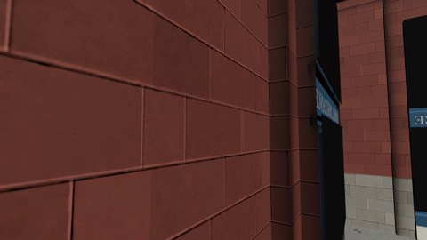
◀ Three.js nule trait suit la sourisNotre moteur ▶
Voir les deux images côte à côte
Three.js nuNotre moteur
Vue de haut, sans ombres
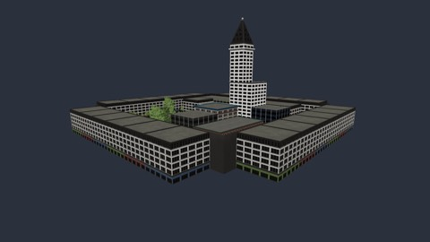
◀ Three.js nule trait suit la sourisNotre moteur ▶
Voir les deux images côte à côte
Three.js nuNotre moteur
Rue, avec ombres
◀ Three.js nule trait suit la sourisNotre moteur ▶
Voir les deux images côte à côte
Three.js nuNotre moteur
Vue de haut, avec ombres
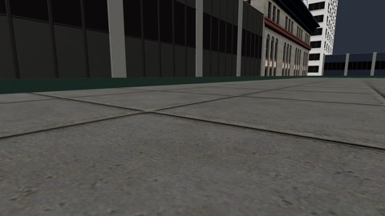
◀ Three.js nule trait suit la sourisNotre moteur ▶
Voir les deux images côte à côte
Three.js nuNotre moteur
Carrefour, avec ombres
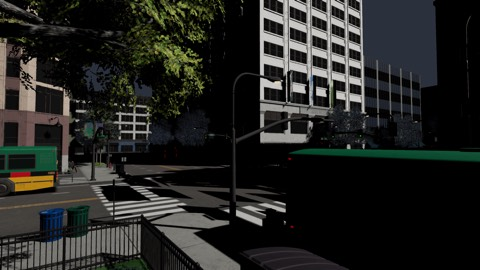
◀ Three.js nule trait suit la sourisNotre moteur ▶
Voir les deux images côte à côte
Three.js nuNotre moteur
Trottoir, avec ombres
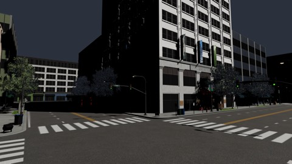
◀ Three.js nule trait suit la sourisNotre moteur ▶
Voir les deux images côte à côte
Three.js nuNotre moteur
Rue, soleil et quatre lampes
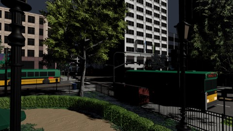
◀ Three.js nule trait suit la sourisNotre moteur ▶
Voir les deux images côte à côte
Three.js nuNotre moteur
Vue de haut, soleil et quatre lampes
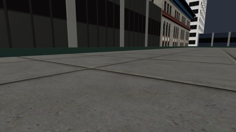
◀ Three.js nule trait suit la sourisNotre moteur ▶
Voir les deux images côte à côte
Three.js nuNotre moteur
Rue, petit écran
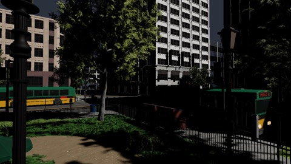
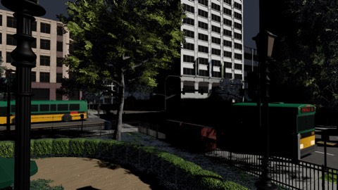
◀ Three.js nule trait suit la sourisNotre moteur ▶
Voir les deux images côte à côte
Three.js nuNotre moteur
Vue de haut, petit écran
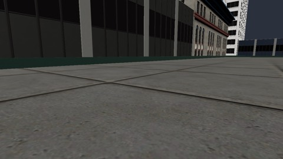
◀ Three.js nule trait suit la sourisNotre moteur ▶
Voir les deux images côte à côte
Three.js nuNotre moteur
Rue, sans ombres
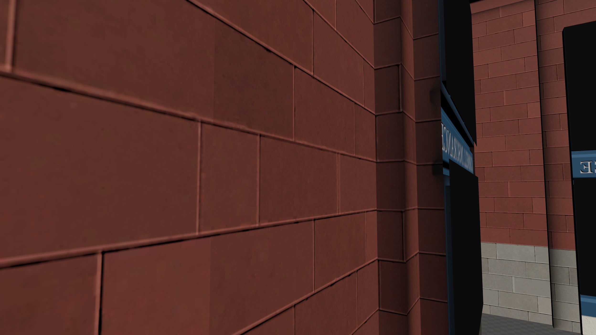
◀ Three.js LODle trait suit la sourisNotre moteur ▶
Voir les deux images côte à côte
Three.js LODNotre moteur
Vue de haut, sans ombres
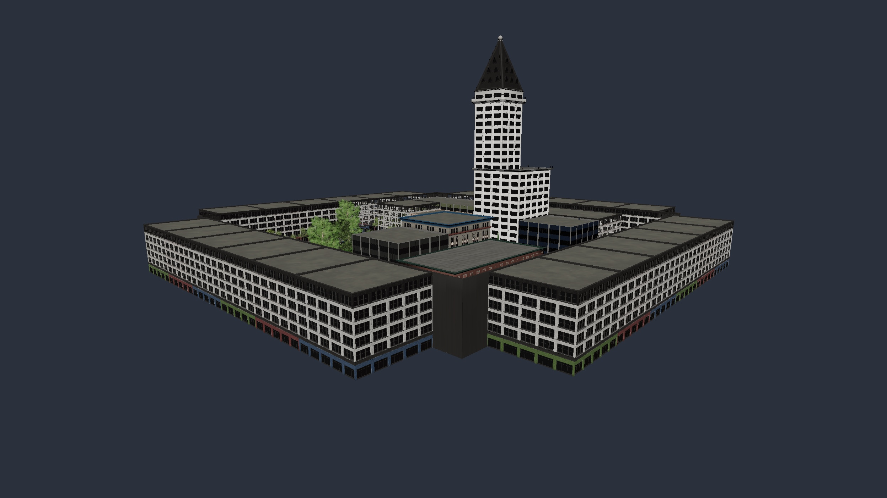
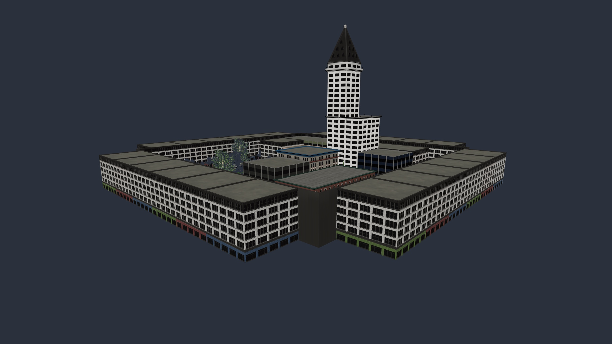
◀ Three.js LODle trait suit la sourisNotre moteur ▶
Voir les deux images côte à côte
Three.js LODNotre moteur
Rue, avec ombres
◀ Three.js LODle trait suit la sourisNotre moteur ▶
Voir les deux images côte à côte
Three.js LODNotre moteur
Vue de haut, avec ombres
◀ Three.js LODle trait suit la sourisNotre moteur ▶
Voir les deux images côte à côte
Three.js LODNotre moteur
Carrefour, avec ombres
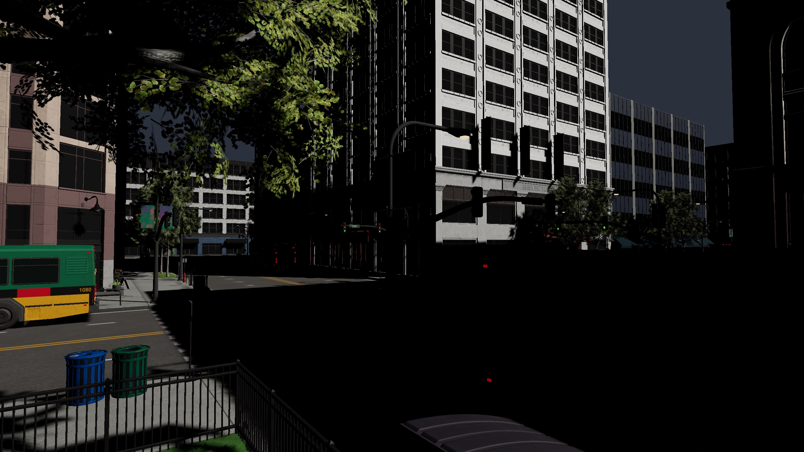
◀ Three.js LODle trait suit la sourisNotre moteur ▶
Voir les deux images côte à côte
Three.js LODNotre moteur
Trottoir, avec ombres
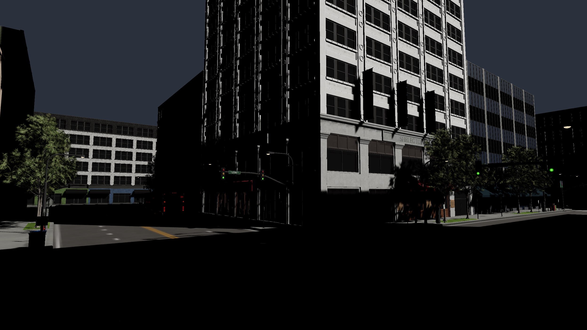
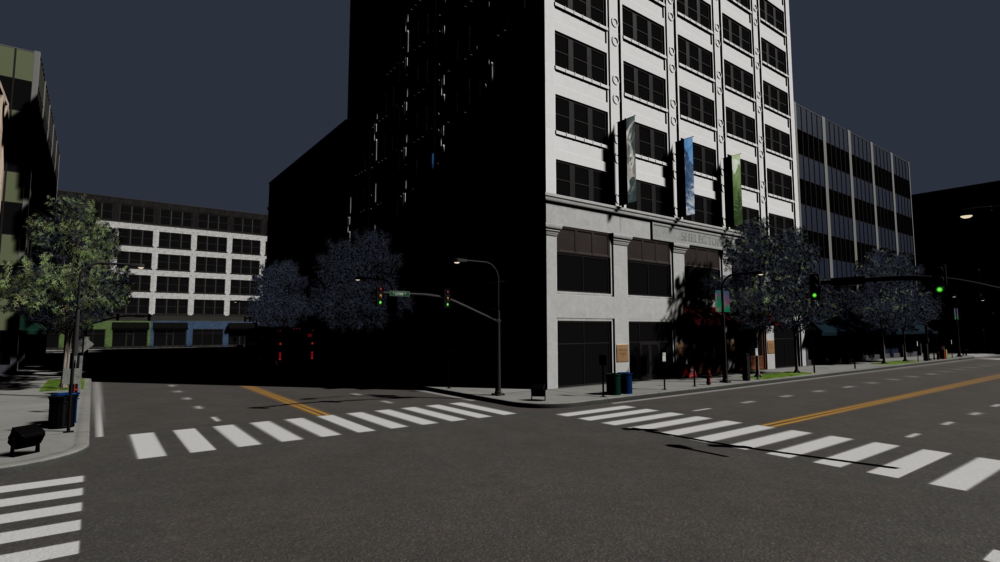
◀ Three.js LODle trait suit la sourisNotre moteur ▶
Voir les deux images côte à côte
Three.js LODNotre moteur
Rue, soleil et quatre lampes
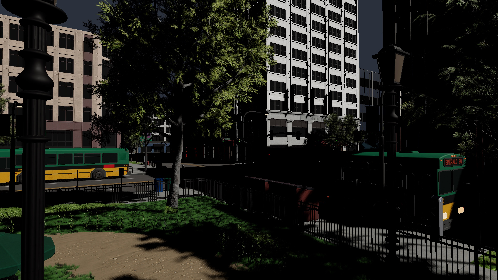
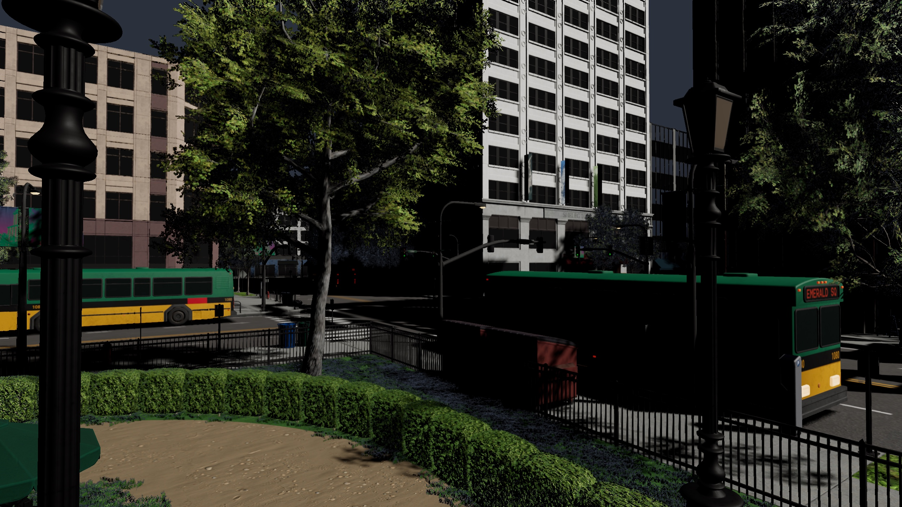
◀ Three.js LODle trait suit la sourisNotre moteur ▶
Voir les deux images côte à côte
Three.js LODNotre moteur
Vue de haut, soleil et quatre lampes
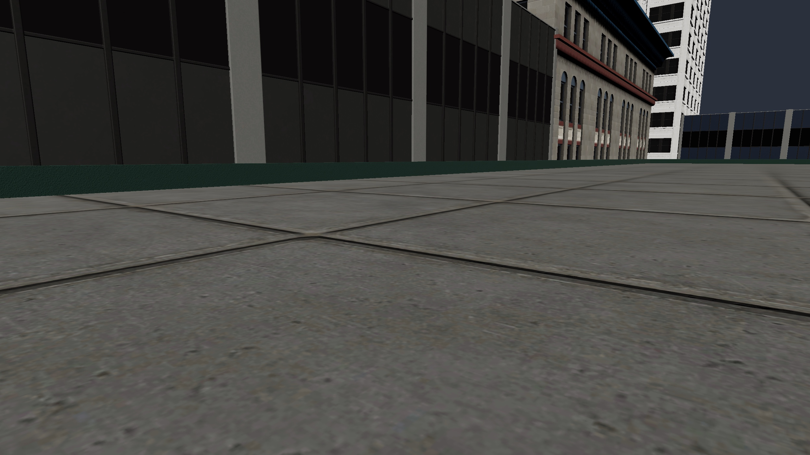
◀ Three.js LODle trait suit la sourisNotre moteur ▶
Voir les deux images côte à côte
Three.js LODNotre moteur
Rue, petit écran
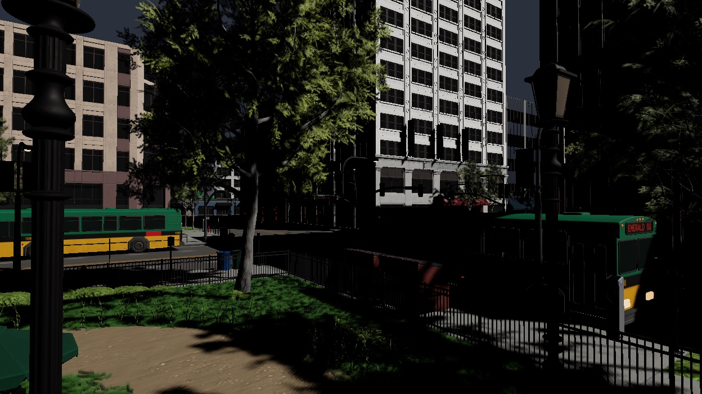
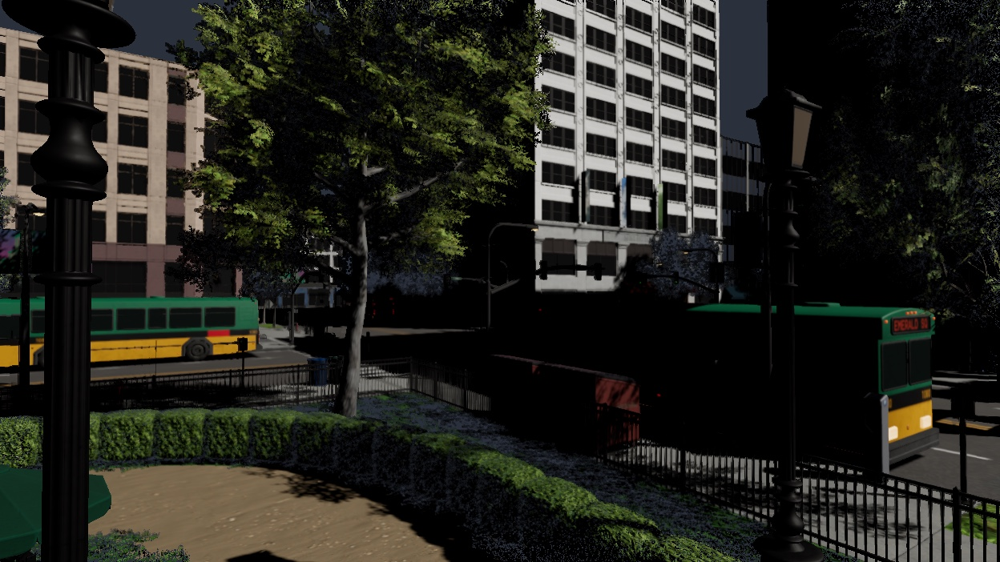
◀ Three.js LODle trait suit la sourisNotre moteur ▶
Voir les deux images côte à côte
Three.js LODNotre moteur
Vue de haut, petit écran
◀ Three.js LODle trait suit la sourisNotre moteur ▶
Voir les deux images côte à côte
Three.js LODNotre moteur
Et sur une petite machine, avec moins de mémoire ?
il s’arrête au lieu de dégrader
Le plus grave du rapport : quand la mémoire manque, le moteur casse au lieu de montrer une image moins belle. À corriger en premier.
Three.js, nu ou LOD : tout ou rien. Si la ville ne tient pas, l’onglet meurt.
Notre moteur : il s’arrête avec une erreur.
Unreal : il montre une image moins fine, mais il continue.
2. D’où viennent les triangles
La coupe de mobile au seuil 1 px, pages recoupées au cache compilé. Aucun chiffre n’est déduit hors de cette coupe.
emerald-square, vue generale, seuil 1 px : 1 988 890 triangles dans la coupe (2 040 372 publiés par le moteur).
Primitive
Triangles
Part
Mesh.092
648 512
32,6 %
Mesh.139
492 924
24,8 %
Mesh.001
197 913
10,0 %
Mesh.118
148 526
7,5 %
Mesh.069
83 314
4,2 %
Mesh.122
37 107
1,9 %
Mesh.155
36 760
1,8 %
Mesh.112
35 502
1,8 %
Mesh.073
26 827
1,3 %
Mesh.009
26 333
1,3 %
Mesh.129
24 248
1,2 %
Mesh.124
23 808
1,2 %
Niveau DAG
Triangles
Part
1
992 999
49,9 %
0
663 238
33,3 %
2
149 532
7,5 %
3
99 080
5,0 %
4
43 813
2,2 %
5
20 601
1,0 %
6
19 627
1,0 %
3. Ce qu’il faut retenir, en détail
Image entière, carte graphique (vue sol, p50)10,7 msp95 13,7 ms · 2496×1404, soleil, caméra mobile
Processeur par image (vue sol, p50)0,40 msp95 0,50 ms · la référence dit « presque nul »
Vue la plus chèreRue : 12,5 msenveloppe carte graphique p50, qualité normale
Triangles sélectionnés (vue générale)2 040 372la référence en rastérise 25 M par image, fixe
Scène immobileaucun travail carteprocesseur 0,10 ms par image
À 2496×1404, l’image ne tient pas dans 16,7 ms côté carte graphique : p50 de 9,9 ms à 12,5 ms selon la vue, p95 jusqu’à 15,4 ms (rue). Soleil, ombres en cascade, caméra mobile, qualité normale.
Le processeur coûte 0,40 ms par image en vue sol (p95 0,50 ms), 0,50 ms en vue générale. La référence dit « presque nul » : c’est la seule milliseconde qui se compare d’une machine à l’autre, et elle n’est pas nulle (Géométrie 1).
Scène immobile : aucune passe carte graphique, l’image est tenue ; le processeur y passe encore 0,10 ms par image (p95 0,20 ms). Le critère « aucun travail dans une scène immobile » est tenu.
À un quart des pixels (1248×702), l’image est 5,6 ms contre 10,7 ms à pleine résolution : l’anomalie de Lumière 18 ne se reproduit pas dans cette campagne.
Raster de calcul contre raster matériel à 1248×702 : 25,2 ms contre 5,9 ms (4,2×), écart d’image 183 283 px (20,92 %, max canal 171). Depuis Géométrie 26 le matériel est le défaut et le calcul une variante ; la référence garde le matériel pour les grands triangles et le calcul pour les petits.
L’antialiasing temporel coûte -0,2 ms d’enveloppe en vue sol (10,7 ms avec, 10,9 ms sans), sous le bruit de mesure ; témoin A/A 0 px avec, 0 px sans.
Le soleil et ses ombres coûtent 4,7 ms d’enveloppe en vue sol (albédo brut 5,9 ms, soleil 10,7 ms). Étape « Ombres » 2,56 ms, éclairage différé 7,25 ms par leurs étiquettes.
Mémoire : 6,64 Go de textures RGBA brutes engagées et 242,9 Mo de géométrie en vue sol ; la référence tient un pool fixe et comprime à la cuisson. C’est le critère de parité le plus loin (Textures T4, T5 ; Géométrie 11).
Face à Three.js nu, sans ombres, vue sol : 1 795 939 px (51,25 %, max canal 148) diffèrent d’au moins un niveau — les deux images sont visuellement les mêmes (côte à côte) ; le banc ne compte pas avec seuil. Three nu rend cette vue en 6,0 ms de temps mur.
Face à Three.js nu avec soleil et ombres : vue générale 30,6 ms (Three) contre 9,2 ms (moteur) ; vue sol 11,1 ms contre 10,6 ms. De haut, la sélection paie ; au ras du sol, le moteur ne fait pas mieux qu’un rendu naïf de toute la scène — ce qui coûte là est plein-écran, pas géométrique.
Ce que les chiffres orientent
Vue sol, qualité normale, pleine résolution, enveloppe 10,7 ms. D’abord ce qui se mesure par différence entre deux exécutions (la seule lecture sûre sur cet appareil ; sous 0,7 ms c’est du bruit) :
Le raster de calcul à la place du matériel (1248×702) : 19,24 ms — Géométrie 26
Les ombres, soleil et quatre ponctuelles (`--ombres off` les coupe toutes) : 6,80 ms — Lumière 17 (cascades en cache, budget d’ombres)
Le soleil seul, cascades d’ombre comprises : 4,72 ms — Lumière 17
Le rebond : 4,47 ms — Lumière 7
Soleil et quatre ponctuelles SANS aucune ombre : l’éclairage lui-même : 0,96 ms — peu de chose : ce sont les ombres qui coûtent, pas la lumière
Les textures lues du cache plutôt que des images : 0,13 ms — Textures T2bis
L’antialiasing temporel : -0,19 ms — Lumière 16
Ensuite ce que disent les étiquettes de passes, à prendre avec la réserve de l’horodatage (la présentation, l’antialiasing et l’éclairage différé lisent 7 ms chacun parce qu’ils absorbent leurs voisines ; ils ne sont pas classés ici) :
Passe matériaux : 2,77 ms — Géométrie 13
Ombres : 2,51 ms — Lumière 17
Tampon de visibilité (sélection, partition, Hi-Z, raster) : 2,14 ms — Géométrie 9, 26
Sans aucune lampe, l’image vaut 5,9 ms : c’est le socle — visibilité, matériaux, présentation — et il est du même ordre qu’un rendu naïf de toute la scène par Three (face à Three.js nu). Au ras du sol, la sélection ne rapporte rien ; ce qui coûte est plein-écran. Côté mémoire, l’ordre est celui de la section mémoire : textures brutes d’abord, grappes dupliquées par instance ensuite, sommets non quantifiés enfin. Côté processeur, 0,40 ms par image contre « presque nul » : les étapes du processeur disent où.
4. La campagne
Scène emerald-square, dépôt 810e8b51, machine Alban.local (12 cœurs, 103,08 Go), Chrome du poste, sans fenêtre sauf l’exécution visible. Campagne jouée du 2026-09-18T10:27:20.067Z au 2026-09-18T11:10:43.599Z. Les chiffres d’une machine ne valent que sur elle.
Exécution
Ce qu’elle isole
Relevés
État
Durée
budget-3000
absente
page.evaluate: Error: ALL_PAGES_PINNED
fixe
image tenue : caméra fixe, aucun travail carte attendu
12 relevés
ok
361 s
mobile
référence de la campagne : caméra mobile, soleil, quatre vues, deux seuils
8 relevés
ok
246 s
sans-lumiere
albédo brut : le coût de l’éclairage par différence avec `mobile`
4 relevés
ok
109 s
res-1872
résolution 1872×1053
2 relevés
ok
57 s
res-1248
résolution 1248×702
2 relevés
ok
55 s
res-624
résolution 624×351
2 relevés
ok
61 s
res-1248-e0
résolution 1248×702 au seuil 0 : densité de triangles par pixel
2 relevés
ok
72 s
res-1248-e2
résolution 1248×702 au seuil 2
2 relevés
ok
55 s
raster-1248
raster de calcul (avant, variante) contre raster matériel (après, défaut) à 1248×702
4 relevés
ok
94 s
raster-2496
raster de calcul contre raster matériel à 2496×1404
sans antialiasing temporel : coût et pixels de l’accumulation par différence avec `mobile`
2 relevés
ok
59 s
profil-off
sans profil par étape : coût du profil et porte de fidélité
2 relevés
ok
51 s
textures-host
textures lues depuis les images sources et non la pyramide cuite
2 relevés
ok
35 s
isolation
page isolée entre origines : chemin de mémoire partagée
2 relevés
ok
61 s
math-js
calculs en lot forcés en JavaScript
2 relevés
ok
61 s
math-wasm
calculs en lot forcés en WebAssembly
2 relevés
ok
60 s
lampes-4
quatre ponctuelles avec ombres, plus le soleil
2 relevés
ok
63 s
lampes-4-sans-ombres
quatre ponctuelles et soleil sans aucune ombre : le coût des cartes par différence
2 relevés
ok
58 s
lampes-16
seize ponctuelles avec ombres
2 relevés
ok
63 s
lampe-mobile
caméra fixe, une lampe qui bouge : ce que coûte une ombre qui se redessine
1 relevés
ok
34 s
ombres-pages-off
même chose, face d’ombre entière : porte d’identité de l’atlas
1 relevés
ok
33 s
budget-ombres-0-25
budget d’ombres serré à 0,25 ms : pages en attente et retard
1 relevés
ok
34 s
rebond
lumière qui rebondit allumée
2 relevés
ok
73 s
instances-4
quatre copies du modèle
1 relevés
ok
47 s
instances-12
douze copies du modèle
1 relevés
ok
76 s
temoin-three
le témoin Three du SDK (avant) face au moteur WebGPU (après), sans ombres
4 relevés
ok
66 s
webgl
le moteur WebGL (exact-cluster-pages)
4 relevés
ok
41 s
webgl2
le moteur autonome WebGL2 (refus attendu si le cache porte du mélange)
absente
page.evaluate: Error: AUTONOMOUS_COVERAGE_MISSING
three-nu
Three nu (avant) face au moteur WebGPU (après), soleil et ombres, caméra mobile
8 relevés
ok
155 s
three-nu-1248
Three nu face au moteur à 1248×702
4 relevés
ok
81 s
three-nu-sans-ombres
Three nu face au moteur sans ombres : fidélité des matériaux et de la lumière seule
4 relevés
ok
76 s
three-nu-lampes-4
Three nu face au moteur, soleil et quatre ponctuelles avec ombres
4 relevés
ok
95 s
three-lod
Three à trois niveaux de détail (avant) face au moteur WebGPU (après), soleil et ombres, caméra mobile
8 relevés
ok
159 s
three-lod-1248
Three à niveaux de détail face au moteur à 1248×702
4 relevés
ok
78 s
three-lod-sans-ombres
Three à niveaux de détail face au moteur sans ombres
4 relevés
ok
77 s
three-lod-lampes-4
Three à niveaux de détail face au moteur, soleil et quatre ponctuelles avec ombres
4 relevés
ok
93 s
visible
fenêtre ouverte : cadence non plafonnée à 60 Hz
2 relevés
ok
67 s
5. L’image entière, vue par vue
Caméra mobile, soleil avec ses cascades d’ombre, textures cuites, 2496×1404, 60 images mesurées puis 120 images de profil. « Qualité » : l’erreur qu’on tolère à l’écran — 0 px, le moteur prend la géométrie la plus fine ; 1 px, il s’autorise un pixel d’écart, invisible à l’œil, et dessine moins. La vue « détail » est un segment immobile de la trajectoire (deux points identiques) : l’image y est tenue et la carte n’y fait rien, même avec la caméra « mobile ». Le seuil d’erreur 0 demande la géométrie la plus fine ; le seuil 1 tolère un pixel d’erreur à l’écran. L’« image entière » est l’enveloppe des passes de la carte, du premier horodatage au dernier : les passes se recouvrent sur cet appareil, une somme les compterait deux fois.
Même scène, même trajectoire, même qualité ; seule la taille de l’image change. Une image plus petite devrait coûter moins : la mesure de Lumière 18 disait le contraire, à cause du raster de calcul qui ne s’admet que quand la mémoire le permet.
Image entière, carte graphique, p50, par résolution(ms)
Vue générale
Sol
Les chiffres
Vue générale
Sol
624×351
4,86
3,58
1248×702
5,76
5,58
1872×1053
6,66
7,64
2496×1404
9,92
10,66
Passe matériaux (WG material surfaces v1), p50, par résolution(ms)
Vue générale
Sol
Les chiffres
Vue générale
Sol
624×351
0,35
0,28
1248×702
0,76
0,94
1872×1053
1,21
1,74
2496×1404
2,11
2,77
Triangles sélectionnés par résolution — en qualité normale, la sélection ne grossit pas ses grappes quand l’écran rétrécit (triangles)
Vue générale
Sol
Les chiffres
Vue générale
Sol
624×351
1 352 464
854 475
1248×702
1 779 990
1 033 809
1872×1053
1 977 647
1 066 515
2496×1404
2 040 372
1 099 276
À 1248×702 : image entière selon la qualité demandée(ms)
Vue générale
Sol
Les chiffres
Vue générale
Sol
qualité maximale (0 px d’erreur)
13,37
5,19
qualité normale (1 px d’erreur)
5,76
5,58
qualité réduite (2 px d’erreur)
5,58
4,98
7. Les passes de la carte graphique
Chaque passe porte sa propre durée ; les groupes ci-dessous sont des sommes de p50 et ne valent pas l’enveloppe. Sur apple metal-3, l’horodatage de la dernière passe d’un groupe absorbe celles qui la précèdent : une étiquette isolée peut mentir, seule une différence d’enveloppe entre deux exécutions tranche.
Sol, qualité normale — enveloppe 10,66 ms p50 / 13,71 ms p95 (40 relevés, timestamp-query)
Groupes de passes, somme des p50(ms)Les chiffres
ms
Tampon de visibilité (sélection, partition, Hi-Z, raster)
2,14
Passe matériaux
2,77
Ombres
2,51
Éclairage (listes de lampes + différé)
10,17
Antialiasing temporel
7,51
Présentation
7,56
Transparents
non mesuré
Rebond
non mesuré
Toutes les passes, p50(ms)Les chiffres
ms
HDR composition + present
7,559
temporal antialiasing
7,508
deferred lighting
7,255
light tiles v1
2,915
material surfaces v1
2,772
shadow atlas v1
2,494
visibility primary
1,239
draw compaction
0,501
HiZ pyramid
0,151
partition
0,135
DAG selection
0,072
HiZ test
0,033
rest truncation
0,016
shadow cull
0,015
visibility secondary
0,010
Vue générale, qualité normale — enveloppe 9,92 ms p50 / 11,70 ms p95 (40 relevés, timestamp-query)
Groupes de passes, somme des p50(ms)Les chiffres
ms
Tampon de visibilité (sélection, partition, Hi-Z, raster)
2,79
Passe matériaux
2,11
Ombres
1,83
Éclairage (listes de lampes + différé)
6,14
Antialiasing temporel
4,45
Présentation
4,51
Transparents
non mesuré
Rebond
non mesuré
Toutes les passes, p50(ms)Les chiffres
ms
HDR composition + present
4,507
temporal antialiasing
4,453
deferred lighting
4,189
material surfaces v1
2,105
light tiles v1
1,950
visibility primary
1,950
shadow atlas v1
1,806
draw compaction
0,437
HiZ pyramid
0,144
partition
0,132
DAG selection
0,075
HiZ test
0,040
shadow cull
0,022
rest truncation
0,014
visibility secondary
0,011
8. Les étapes du processeur
Ce que le processeur fait pour une image, étape par étape (vue sol, qualité normale). « non mesuré » n’est pas zéro : l’étape n’a pas de chronomètre, et la raison est dite.
Deux exécutions dont une seule option diffère. La colonne « Δ » est la différence des enveloppes p50 de la carte graphique, la seule lecture qui vaut sur cet appareil ; l’écart entre deux exécutions identiques est de l’ordre de 0,7 ms, rien de plus petit ne conclut.
Porte
GPU référence
GPU variante
Δ GPU
CPU référence
CPU variante
Δ CPU
Lecture
generale · antialiasing temporel off
9,92
9,12
-0,80
0,50
0,50
0,00
le coût de l’accumulation temporelle, par l’enveloppe
generale · profil par étape off
9,92
non mesuré
—
0,50
0,50
0,00
le profil off ne publie pas d’enveloppe : lire le processeur
generale · textures depuis les images sources
9,92
9,16
-0,76
0,50
0,50
0,00
contre la pyramide cuite du cache
generale · page isolée (mémoire partagée)
9,92
9,27
-0,65
0,50
0,45
-0,05
generale · calculs en lot : js → wasm
9,65
9,48
-0,17
0,50
0,40
-0,10
les deux chemins imposés, même scène
sol · antialiasing temporel off
10,66
10,85
+0,19
0,40
0,40
+0,00
le coût de l’accumulation temporelle, par l’enveloppe
sol · profil par étape off
10,66
non mesuré
—
0,40
0,40
+0,00
le profil off ne publie pas d’enveloppe : lire le processeur
sol · textures depuis les images sources
10,66
10,53
-0,13
0,40
0,40
0,00
contre la pyramide cuite du cache
sol · page isolée (mémoire partagée)
10,66
10,34
-0,32
0,40
0,42
+0,02
sol · calculs en lot : js → wasm
11,05
10,98
-0,07
0,40
0,40
0,00
les deux chemins imposés, même scène
generale · 1248×702 · raster matériel (défaut) → raster de calcul (variante)
5,92
38,48
+32,56
0,60
0,60
0,00
écart d’image 3 036 px (0,35 %, max canal 35) ; coupe identique : true
sol · 1248×702 · raster matériel (défaut) → raster de calcul (variante)
5,92
25,17
+19,24
0,40
0,40
0,00
écart d’image 183 283 px (20,92 %, max canal 171) ; coupe identique : true
generale · 2496×1404 · raster matériel (défaut) → raster de calcul (variante)
non mesuré
non mesuré
—
non mesuré
non mesuré
—
écart d’image — ; coupe identique : —
sol · 2496×1404 · raster matériel (défaut) → raster de calcul (variante)
non mesuré
non mesuré
—
non mesuré
non mesuré
—
écart d’image — ; coupe identique : —
Le témoin A/A de chaque exécution
Le même côté joué deux fois : des pixels qui bougent ici sont du bruit du moteur, pas une différence d’option.
Vue
mobile
aa-off
profil-off
textures-host
generale
0 px (0,00 %, max canal 0)
0 px (0,00 %, max canal 0)
0 px (0,00 %, max canal 0)
0 px (0,00 %, max canal 0)
sol
0 px (0,00 %, max canal 0)
0 px (0,00 %, max canal 0)
405 895 px (11,58 %, max canal 184)
0 px (0,00 %, max canal 0)
10. Lampes, ombres, rebond
Ce que coûte la lumière, par différence entre exécutions : sans lampe, le moteur rend l’albédo brut ; le soleil ajoute ses cascades ; chaque ponctuelle sa carte d’ombre ; le rebond ses sondes.
Image entière selon l’éclairage, p50(ms)
Vue générale
Sol
Les chiffres
Vue générale
Sol
aucune lampe (albédo brut)
5,89
5,93
soleil seul
9,92
10,66
soleil + 4 ponctuelles sans ombres
6,60
6,89
soleil + 4 ponctuelles avec ombres
10,38
13,69
soleil + 16 ponctuelles avec ombres
11,33
13,92
soleil + 4 ponctuelles + rebond
12,58
18,15
Étape « Ombres », GPU p50 — étiquette de passe : indicative, voir la note sur l’horodatage (ms)
Vue générale
Sol
Les chiffres
Vue générale
Sol
aucune lampe (albédo brut)
non mesuré
non mesuré
soleil seul
1,824
2,559
soleil + 4 ponctuelles sans ombres
non mesuré
non mesuré
soleil + 4 ponctuelles avec ombres
1,530
2,416
soleil + 16 ponctuelles avec ombres
1,476
2,476
soleil + 4 ponctuelles + rebond
1,218
1,020
Éclairage
Lampes actives
Ombres redessinées (vue sol)
Pages en attente, retard
Rebond
aucune lampe (albédo brut)
0
0 lampes, 0 cascades, 0 pages, 0 appels
0 pages, 0,0 ms
0 sondes, 0 rayons
soleil seul
1
1 lampes, 1 cascades, 64 pages, 2 appels
192 pages, 40,4 ms
0 sondes, 0 rayons
soleil + 4 ponctuelles sans ombres
5
0 lampes, 0 cascades, 0 pages, 0 appels
0 pages, 0,0 ms
0 sondes, 0 rayons
soleil + 4 ponctuelles avec ombres
5
1 lampes, 0 cascades, 16 pages, 2 appels
243 pages, 424,2 ms
0 sondes, 0 rayons
soleil + 16 ponctuelles avec ombres
17
1 lampes, 0 cascades, 4 pages, 2 appels
254 pages, 1 826,5 ms
0 sondes, 0 rayons
soleil + 4 ponctuelles + rebond
5
1 lampes, 0 cascades, 16 pages, 2 appels
243 pages, 501,9 ms
15 sondes, 960 rayons
Une lampe qui bouge, caméra fixe
Seule l’ombre de la lampe mobile se redessine ; c’est le travail d’une scène presque immobile. Les deux premières lignes doivent porter la même empreinte d’atlas : c’est la porte d’identité des cartes.
Mode
Image entière p50
Ombres p50
Pages
Empreinte de l’atlas
Témoin A/A
pages d’ombre seulement (défaut)
14,39
2,579
16 invalidées, 16 redessinées, 80 en attente, retard 84,8 ms / 4 images
2766650589 (3 749 816 écrites)
12 789 px (0,36 %, max canal 1)
face d’ombre entière
13,79
2,261
16 invalidées, 16 redessinées, 80 en attente, retard 80,7 ms / 4 images
2766650589 (3 749 816 écrites)
394 518 px (11,26 %, max canal 20)
budget 0,25 ms
14,05
2,608
16 invalidées, 16 redessinées, 80 en attente, retard 102,5 ms / 4 images
non relevée
0 px (0,00 %, max canal 0)
11. Mémoire
La parité est un critère de mémoire autant que de vitesse : budgets fixes, résidence pilotée par l’image, compression à la cuisson. Voici ce que le moteur tient en mémoire sur cette scène.
Instances
Copies
Géométrie résidente
Pages résidentes
Triangles sélectionnés
GPU p50
CPU p50
1 copie
242,9 Mo
19 724
2 040 372
9,92
0,50
4 copies
242,9 Mo
20 536
3 353 453
13,54
2,10
12 copies
242,9 Mo
23 824
7 983 908
21,88
15,00
Budget de pages : 100 000 contre 3 000
Vue
Résidentes / demandées (100 000)
Résidentes / demandées (3 000)
Non couverts (100 000)
Non couverts (3 000)
Géométrie (100 000)
Géométrie (3 000)
GPU p50 (3 000)
generale
19 724 / 100 000
non mesuré / non mesuré
0
non mesuré
242,9 Mo
non mesuré
non mesuré
sol
6 327 / 100 000
non mesuré / non mesuré
0
non mesuré
242,9 Mo
non mesuré
non mesuré
rue
5 995 / 100 000
non mesuré / non mesuré
0
non mesuré
242,9 Mo
non mesuré
non mesuré
detail
3 856 / 100 000
non mesuré / non mesuré
0
non mesuré
242,9 Mo
non mesuré
non mesuré
Textures
Source
Pool de tuiles
Engagé
Tuiles au niveau voulu / demandées
Évictions
Réseau
Préparation
pyramide cuite (cache)
non mesuré
6,64 Go
non mesuré / non mesuré
non mesuré
png 942,0 Mo, bin 242,9 Mo
1,1 s
images sources (host)
non mesuré
4,99 Go
non mesuré / non mesuré
non mesuré
png 591,7 Mo, bin 242,9 Mo
2,0 s
12. Les moteurs et le témoin
Les trois moteurs du dépôt sur la même trajectoire, et le témoin Three face au moteur WebGPU à pose fixe et sans ombres — le témoin n’en dessine pas —, ce qui donne un écart de fidélité en pixels et non une comparaison entre deux campagnes.
Three.js nu : le glTF source chargé par GLTFLoader, MeshStandardMaterial, tout dessiné à chaque image, une carte d’ombre de 4096² pour le soleil, un cube de 1024² par ponctuelle, ACES et sRGB. Aucune sélection, aucune diffusion, aucun antialiasing temporel, aucun rebond. Sa durée d’image est un temps mur synchronisé (render puis la lecture d’un pixel, qui attend la carte) : une seule mesure, pas une somme, et pas la même chose qu’une enveloppe de passes GPU — les deux colonnes se lisent côte à côte, pas l’une contre l’autre au dixième près. WebGL ne donne pas de temps par passe.
Une image : Three nu (temps mur synchronisé) et moteur (enveloppe carte), p50(ms)
Three nu
moteur WebGPU
Les chiffres
Three nu
moteur WebGPU
generale
30,60
9,24
sol
11,10
10,55
rue
12,90
12,31
detail
9,30
non mesuré
Processeur par image, p50(ms)
Three nu
moteur WebGPU
Les chiffres
Three nu
moteur WebGPU
generale
19,30
0,50
sol
4,50
0,40
rue
4,60
0,40
detail
3,70
0,10
Vue
Three mur p50
Three mur p95
Moteur GPU p50
Moteur GPU p95
Three rAF p50
Three CPU p50
Moteur CPU p50
Three préparation
Moteur préparation
generale
30,60
31,60
9,24
11,69
16,70
19,30
0,50
5,1 s
1,1 s
sol
11,10
93,30
10,55
14,09
16,70
4,50
0,40
4,1 s
1,1 s
rue
12,90
85,80
12,31
13,63
16,70
4,60
0,40
4,0 s
1,1 s
detail
9,30
10,10
non mesuré
non mesuré
16,70
3,70
0,10
5,0 s
1,1 s
Ce que chacun dessine et tient
Vue
Appels Three
Appels moteur
Triangles Three (dessinés)
Triangles moteur (sélectionnés)
Géométrie Three
Géométrie moteur
Textures Three (estimées, mips)
Textures moteur (engagées)
Réseau Three
Réseau moteur
generale
2 324
18
11 767 445
2 040 372
197,1 Mo
242,9 Mo
6,68 Go
6,64 Go
787,7 Mo
1,21 Go
sol
855
18
6 121 268
1 099 276
197,1 Mo
242,9 Mo
6,68 Go
6,64 Go
787,7 Mo
1,19 Go
rue
624
18
5 253 357
742 797
197,1 Mo
242,9 Mo
6,68 Go
6,64 Go
787,7 Mo
1,19 Go
detail
480
1
1 612 331
610 891
197,1 Mo
242,9 Mo
6,68 Go
6,64 Go
787,7 Mo
1,18 Go
Fidélité : l’écart d’image entre les deux, et ce que coûte chaque éclairage
L’écart en pixels est celui de la dernière image mesurée, même pose des deux côtés. Sans ombres, il ne reste que les matériaux et la lumière directe : c’est l’écart le plus parlant. Avec ombres, Three n’a qu’une carte là où le moteur a des cascades — l’écart porte d’abord les ombres.
Exécution · vue
Three mur p50
Moteur GPU p50
Δ (moteur − Three)
Écart d’image
Témoin A/A du moteur
soleil et ombres · generale
30,60
9,24
-21,36
2 616 486 px (74,66 %, max canal 216)
0 px (0,00 %, max canal 0)
soleil et ombres · sol
11,10
10,55
-0,55
2 134 314 px (60,90 %, max canal 228)
0 px (0,00 %, max canal 0)
soleil et ombres · rue
12,90
12,31
-0,59
1 706 274 px (48,69 %, max canal 228)
0 px (0,00 %, max canal 0)
soleil et ombres · detail
9,30
non mesuré
—
1 937 330 px (55,28 %, max canal 233)
0 px (0,00 %, max canal 0)
soleil sans ombres · generale
23,90
non mesuré
—
492 736 px (14,06 %, max canal 211)
0 px (0,00 %, max canal 0)
soleil sans ombres · sol
6,00
non mesuré
—
1 795 939 px (51,25 %, max canal 148)
0 px (0,00 %, max canal 0)
soleil + 4 ponctuelles avec ombres · generale
60,10
10,05
-50,05
2 617 373 px (74,69 %, max canal 216)
1 588 926 px (45,34 %, max canal 191)
soleil + 4 ponctuelles avec ombres · sol
41,10
13,86
-27,24
2 267 839 px (64,71 %, max canal 225)
1 538 px (0,04 %, max canal 1)
1248×702, soleil et ombres · generale
30,50
5,57
-24,93
691 596 px (78,94 %, max canal 205)
0 px (0,00 %, max canal 0)
1248×702, soleil et ombres · sol
11,70
5,35
-6,35
581 275 px (66,35 %, max canal 234)
189 643 px (21,65 %, max canal 181)
Les images se comparent dans la fiche « Les deux images sont-elles les mêmes ? » en tête du rapport.
À 1248×702
generale : Three 30,50 ms, moteur 5,57 ms · sol : Three 11,70 ms, moteur 5,35 ms.
14. Face à la référence (UE5, Nanite)
Les chiffres de la référence sont ceux de docs/REFERENCE_UE5.md. Les constantes se comparent ; les millisecondes donnent la forme du profil, pas un verdict.
Grandeur
La référence
Nous (cette campagne)
Lecture
Triangles par grappe
128
128
identique (constante vérifiée par le test)
Grappes par groupe
8 à 32
8 à 32
identique ; le plancher 8 n’est pas appliqué (Géométrie 16)
Page de diffusion
128 Kio (source secondaire)
128 Kio
identique
Budget de résidence
512 Mo, pages racines épinglées
100 000 pages demandées, 6 327 résidentes, 242,9 Mo
compté en pages chez nous, en octets chez eux
Géométrie en mémoire
8,7 octets par triangle
~48 octets par triangle (docs/FORMAT.md, non mesuré ici)
le banc publie des octets résidents, pas des octets par triangle : ~6× au-dessus par la doc
Triangles rastérisés par image
25 M quelle que soit la scène
1 099 276
notre compte suit la scène et la qualité demandée, le leur est fixe
Coût processeur par image
« presque nul »
0,40 ms
la seule milliseconde comparable d’une machine à l’autre
Tampon de visibilité (GPU)
~2,5 ms (PS5, 2496×1404)
2,14 ms
même résolution, machine différente : forme du profil, pas verdict
Passe matériaux (GPU)
~2,1 ms (Emit GBuffer)
2,77 ms
même réserve
Appels de dessin
un par matériau
18
un seul pour les grappes exactes ; un par item et par face pour le mélange
Travail dans une scène immobile
aucun
aucune passe carte : image tenue
processeur 0,10 ms par image à caméra fixe
Antialiasing temporel
non publié (rendu à 2496×1404, remonté en 4K)
7,51 ms
à résolution native, sans remontée
Instances
une fiche par grappe, l’instance en index
12 copies : 242,9 Mo de géométrie
douze copies des grappes (Géométrie 5)
Textures
pool physique fixe, comprimé à la cuisson (non sourcé)
6,64 Go engagés sur non mesuré de pool RGBA brut
ni pool fixe ni compression (Textures T4, T5)
Matériaux du chemin virtualisé
opaque et masqué seulement
opaque, masqué et mélange
le mélange coûte un appel par item et par face (Compilateur 10)
La forme du profil
Passe
Référence, ms (PS5, 2496×1404 → 4K)
Nous, ms p50 (vue sol, 2496×1404)
Clear VisBuffer
0,066
non mesuré
InstanceCull + ClusterCull
0,514
0,707 ms
Rasterize (matériel + calcul)
1,148
1,250 ms
BuildHZB
0,099
0,184 ms
Post Pass (2e passe d’occultation)
0,410
0,010 ms
Emit GBuffer / passe matériaux
2,084
2,772 ms
Ombres (cartes d’ombre virtuelles)
non publié dans ce talk
2,509 ms
Éclairage différé
non publié dans ce talk
10,170 ms
Antialiasing temporel
non publié
7,508 ms
Présentation
non publié
7,559 ms
15. Ce qui n’est pas mesuré, et pourquoi
Étape « Textures : ordre et transferts vers les atlas » : ni processeur ni carte — file vide : aucun ordre à calculer ; les transferts passent par la file de la carte, sans passe horodatée
Étape « Couches coplanaires » : ni processeur ni carte — décidées par la coupe, sans borne propre ; dessinées dans les passes de géométrie, sans passe propre
Étape « Ombres lointaines (soleil contre le proxy) » : ni processeur ni carte — aucun travail processeur : le rayon lointain est tiré par la résolution différée ; mesurée dans l’étape « Éclairage (résolution) », qui tire le rayon lointain
Étape « Rebond (sondes d'irradiance) » : ni processeur ni carte — the bounce is off by default; create the explorer with bounce: true ; the bounce is off by default; create the explorer with bounce: true
Cadence d’affichage : non publiée par le moteur WebGPU ; le banc ne donne pas de FPS, seulement des enveloppes.
Témoin A/A bruyant (plus de 1 % des pixels) : mobile · rue · qualité 0 (33,1 %) ; res-1248 · sol · qualité 1 (19,3 %) ; res-624 · sol · qualité 1 (20,0 %) ; res-1248-e0 · generale · qualité 0 (52,7 %) ; raster-1248 · sol · qualité 1 (19,2 %) ; raster-1248 · sol · qualité 1 (19,2 %) ; profil-off · sol · qualité 1 (11,6 %) ; lampes-4 · generale · qualité 1 (41,1 %) ; lampes-4 · sol · qualité 1 (56,1 %) ; lampes-16 · generale · qualité 1 (37,5 %) ; lampes-16 · sol · qualité 1 (20,8 %) ; ombres-pages-off · sol · qualité 1 (11,3 %) ; rebond · generale · qualité 1 (4,2 %) ; rebond · sol · qualité 1 (24,6 %) ; instances-4 · generale · qualité 1 (64,7 %) ; instances-12 · generale · qualité 1 (25,4 %) ; three-nu-1248 · sol · qualité 1 (21,6 %) ; three-nu-1248 · sol · qualité 1 (21,6 %) ; three-nu-lampes-4 · generale · qualité 1 (45,3 %) ; three-nu-lampes-4 · generale · qualité 1 (45,3 %) ; three-lod-1248 · sol · qualité 1 (21,8 %) ; three-lod-1248 · sol · qualité 1 (21,8 %) ; three-lod-lampes-4 · generale · qualité 1 (33,5 %) ; three-lod-lampes-4 · generale · qualité 1 (33,5 %).
Le témoin Three du SDK (`temoin-three`) dessine SANS textures. Le témoin Three nu le replace. Écart d’image : tout pixel d’un niveau, sans seuil. Octets par triangle : ~48 o/tri (`docs/FORMAT.md`), non mesurés ici. `vramBytes` : non publié. Millisecondes Unreal : sa console, pas ici (Géométrie 25). Oracle du rebond : scène pièce absente. `profil-off` : pas d’enveloppe carte.